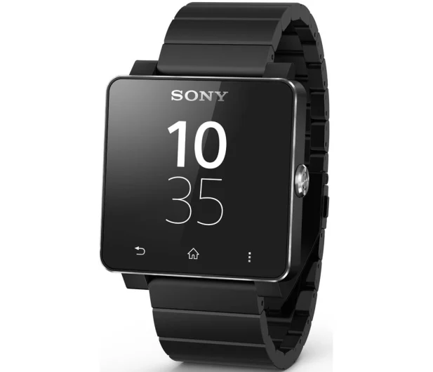

Sony Smartwatch 2

Sony Smartwatch 2 to inteligentny zegarek produkowany przez firmę Sony, który działa w oparciu o system operacyjny Android. Jest to urządzenie noszone na nadgarstku, które pozwala użytkownikom na kontrolowanie niektórych funkcji smartfona, takich jak powiadomienia, połączenia telefoniczne i SMS-y. Smartwatch 2 posiada kolorowy ekran dotykowy o przekątnej 1,6 cala, a także moduł Bluetooth umożliwiający łączność z innymi urządzeniami mobilnymi. Można go również wykorzystać do monitorowania aktywności fizycznej, np. kroków czy spalonych kalorii, dzięki wbudowanemu czujnikowi ruchu.
Powrót